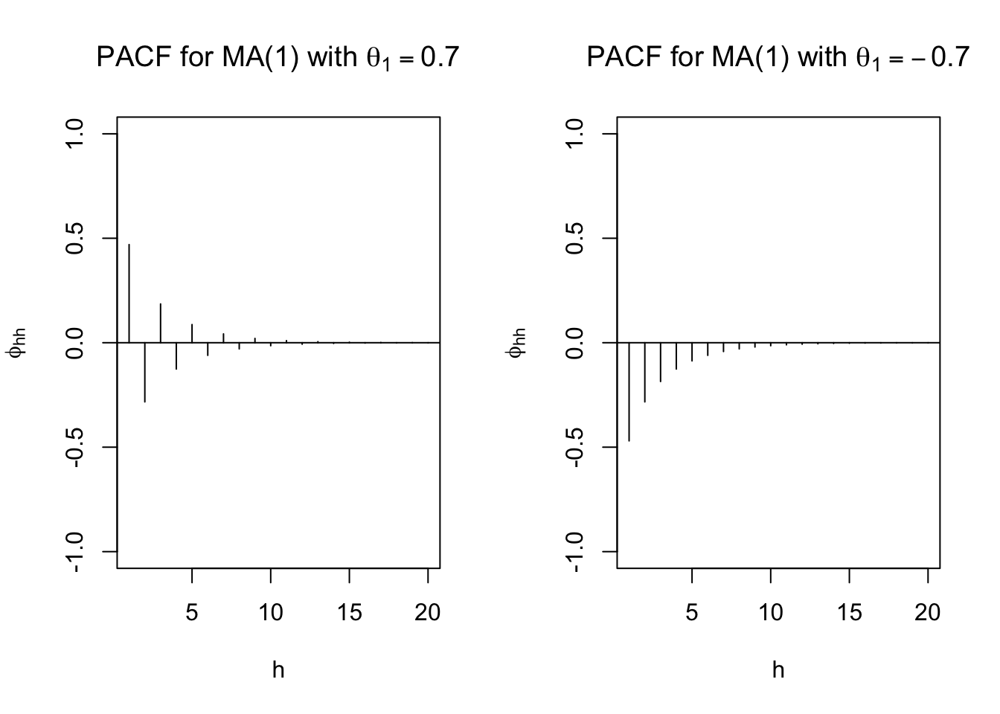

Chapter 10 Moving Average Models
10.1 Moving Average models-MA(q)
The white noise terms on the right side are linearly combined to form the model
\(x_t=w_t+\theta_1w_{t-1}+\theta_2w_{t-2}+...+\theta_qw_{t-q}=\theta(B)w_t\) ,where
- \(\theta_1,\theta_2,...\theta_q\) are parameters
- \(\theta(B)=(1+\theta_1B+\theta_2B^2+...+\theta_qB^q)\)
- \(w_t\sim \mathrm{ind}(0,\sigma^2_w)\) for t=1,…,n and typically assumed to have a normal distribution.
Notes:
“+” signs are used in the moving average operator, \(\theta(B)\). “-“ signs were used in the autoregressive operator, \(\phi(B)\). There is no particular reason why these are defined differently (other than what goes on the “right” side of the equality when writing the model out). I chose the way R and Shumway and Stoffer’s textbook defines these models. Many books use “-“ signs also in \(\theta(B)\), so be careful! This will cause items like ACFs to be represented differently.
The autocovariance of a MA(1):
\(x_t=w_t+\theta_1w_{t-1}\), where \(w_t \sim \mathrm{ind}(0, \sigma^2_w)\) for t=1,…,n
\(\gamma(h)=Cov(x_t,x_{t+h})=E(x_tx_{t+h})-E(x_t)E(x_{t+h})=E(x_tx_{t+h})-0=E(x_tx_{t+h})\)
Then\[\gamma(h)=E[(w_t+\theta_1w_{t-1})(w_{t+h}+\theta_1w_{t+h-1})]\\ =E[w_tw_{t+h}+\theta_1w_tw_{t+h-1}+\theta_1w_{t-1}w_{t+h}+\theta_1^2w_{t-1}w_{t+h-1}]\\ =E(w_tw_{t+h})+\theta_1E(w_tw_{t+h-1})+\theta_1E(w_{t-1}w_{t+h})+\theta_1^2E(w_{t-1}w_{t+h-1})\]
For h=0: \[E[w_t^2] + \theta_1E[w_tw_{t-1}] + \theta_1E[w_{t-1}w_t] + \theta_1^2E[w_{t-1}^2]\\ = Var(w_t) + [E(w_t)]^2 + 2\theta_1E[w_t]E[w_{t-1}] + \theta_1^2Var(wt-1) +\theta_1^2[E(w_{t-1})]^2\\ = \sigma_w^2 + 0^2 + 0 + \theta_1\sigma^2_w + 0\\ = \sigma_w^2(1+ \theta_1^2)\]
For h=1: \[E[w_tw_{t+1}] + \theta_1E[w_t^2] + \theta_1E[w_{t-1}w_{t+1}] + \theta_1^2E[w_{t-1}w_t]\\ = E[w_t]E[w_{t+1}] + \theta_1[Var(w_t) + [E(w_t)]^2] + \theta_1E[w_{t-1}]E[w_{t+1}] + \theta_1^2E[w_{t-1}]E[w_t]\\ = 0 + \theta_1(\sigma_w^2+0) + 0 + 0 = \theta_1\sigma_w^2\]
For h=2: \[E[w_tw_{t+2}]+\theta_1E[w_tw_{t+1}]+\theta_1E[w_{t-1}w_{t+2}]+\theta_1^2E[w_{t-1}w_{t+1}]=0\]
For h>2: \(\gamma(h)=0\)
Hence, \[ \gamma(h)= \begin{cases} (1+\theta_1^2)\sigma_w^2 & \text{if } h=0 \\ \theta_1\sigma_w^2 & \text{if } h=1 \\ 0 & \text{if } h>1 \end{cases} \]
- The autocorrelation function of a MA(1): \[ \rho(h)= \begin{cases} 1 & \text{if } h=0 \\ \frac{\theta_1\sigma_w^2}{(1+\theta_1^2)\sigma_w^2}=\frac{\theta_1}{1+\theta_1^2} & \text{if } h=1 \\ 0 & \text{if } h>1 \end{cases} \]
Notice the autocorrelation is 0 for h > 1!!! This is very helpful when it comes to model selection!!!
- We have already seen an “infinite order” (q = \(\infty\)) moving average process as defined in the form of a linear process. This came up in our AR(p) examples earlier. Again, a linear process can be defined as
\[ x_t=\mu+\sum_{j=-\infty}^{\infty}\psi_jw_{t-j},\\ \sum_{j=-\infty}^{\infty} |\psi_j|<\infty,\\ w_t \sim ind. N(0, \sigma_w^2)\]
where it can be shown that \(\gamma(h)=\sigma_w^2\sum_{-\infty}^{\infty}\psi_{j+h}\psi_j\) for h \(\ge\) 0.
For a MA(1), \(\psi_0 = 1\) and \(\psi_1 = \theta_1\) and the remaining \(\psi_j\)’s equal to 0. This results in \[x_t=\mu+\sum_{j=-\infty}^{\infty}\psi_jw_{t-j}\\ =0+\psi_0w_t+\psi_1w_{t-1}=w_t+\theta_1w_{t-1}\]
and \(\gamma(0)=\sigma_w^2\sum_{j=-\infty}^{\infty}\psi_{j+0}\psi_j=\sigma_w^2(\psi_0^2+\psi_1^2)=\sigma_w^2(1+\theta_1^2)\),
\(\gamma(1)=\sigma_w^2\sum_{j=-\infty}^{\infty}\psi_{j+1}\psi_j=\sigma_w^2(\psi_1+\psi_0)=\sigma_w^2\theta_1\),
\(\gamma(h)=\sigma_w^2\sum_{j=-\infty}^{\infty}\psi_{j+h}\psi_j=\sigma_w^2(\psi_{0+h}+\psi_0)=\sigma_w^2(\psi_{0+h}+\psi_0)=0\) for h \(\ge\) 2.
Example 10.1 MA(1) with \(\theta_1\)=0.7 and -0.7
The purpose of this example is to show what observed values from a MA(1) process look like for t = 1, …, 100. Pay close attention to the differences between \(\theta_1\) = 0.7 and \(\theta_1\) = -0.7. Questions to think about are:
- Why are some plot plots more or less “choppy” (“jagged”)?
- What would happen to the plots if |\(\theta_1\)| was closer to 0 or 1?
The autocorrelations are
| h | \(\theta_1=0.7\) | \(\theta_1=-0.7\) |
|---|---|---|
| 1 | 0.47 | -0.47 |
| 2 | 0 | 0 |
| 3 | 0 | 0 |
set.seed(8199)
x <- arima.sim(model=list(ma=c(0.7)), n=100, rand.gen = rnorm, sd=10)
plot(x = x, ylab = expression(x[t]), xlab = "t", type =
"l", col = c("red"), main =
expression(paste(x[t] == w[t] + 0.7*w[t-1], " where ",
w[t], " ~ ind. N(0,100)")) , panel.first=grid(col =
"gray", lty = "dotted"))
points(x = x, pch = 20, col = "blue")set.seed(8199)
x <- arima.sim(model=list(ma=c(-0.7)), n=100, rand.gen = rnorm, sd=10)
plot(x = x, ylab = expression(x[t]), xlab = "t", type =
"l", col = c("red"), main =
expression(paste(x[t] == w[t] -0.7*w[t-1], " where ",
w[t], " ~ ind. N(0,100)")) , panel.first=grid(col =
"gray", lty = "dotted"))
points(x = x, pch = 20, col = "blue")round(ARMAacf(ma = c(0.7), lag.max = 20),4)## 0 1 2 3 4 5 6 7 8 9 10
## 1.0000 0.4698 0.0000 0.0000 0.0000 0.0000 0.0000 0.0000 0.0000 0.0000 0.0000
## 11 12 13 14 15 16 17 18 19 20
## 0.0000 0.0000 0.0000 0.0000 0.0000 0.0000 0.0000 0.0000 0.0000 0.0000# autocorrelation is 0 for h > 1
par(mfrow=c(1,2))
plot(y = ARMAacf(ma = c(0.7), lag.max = 20), x = 0:20,
type = "h", ylim = c(-1,1), xlab = "h", ylab =
expression(rho(h)), main = expression(paste("ACF for
MA(1) with ", theta[1] == 0.7)))
abline(h=0)
plot(y = ARMAacf(ma = c(-0.7), lag.max = 20), x =
0:20, type = "h", ylim = c(-1,1), xlab = "h", ylab =
expression(rho(h)), main = expression(paste("ACF for
MA(1) with ", theta[1] == -0.7)))
abline(h = 0)Whenever you see a plot of ACF like this, you should consider MA process for your model selection!!!
Using ARMAtoMA() produces the obvious result.
round(ARMAtoMA(ma = c(0.7), lag.max = 5),4)## [1] 0.7 0.0 0.0 0.0 0.0#Example for MA(2)
round(ARMAtoMA(ma = c(0.7, -0.4), lag.max = 5),4)## [1] 0.7 -0.4 0.0 0.0 0.0# PACF
par(mfrow = c(1,2))
round(ARMAacf(ma = c(0.7), lag.max = 20, pacf = TRUE),4)## [1] 0.4698 -0.2832 0.1856 -0.1260 0.0869 -0.0604 0.0421 -0.0294 0.0206
## [10] -0.0144 0.0101 -0.0071 0.0049 -0.0035 0.0024 -0.0017 0.0012 -0.0008
## [19] 0.0006 -0.0004plot(x = ARMAacf(ma = c(0.7), lag.max = 20, pacf = TRUE), type = "h", ylim = c(-1,1), xlab = "h", ylab = expression(phi[hh]),
main = expression(paste("PACF for MA(1) with ", theta[1] == 0.7)))
abline(h = 0)
round(ARMAacf(ma = c(-0.7), lag.max = 20, pacf = TRUE),4) ## [1] -0.4698 -0.2832 -0.1856 -0.1260 -0.0869 -0.0604 -0.0421 -0.0294 -0.0206
## [10] -0.0144 -0.0101 -0.0071 -0.0049 -0.0035 -0.0024 -0.0017 -0.0012 -0.0008
## [19] -0.0006 -0.0004plot(x = ARMAacf(ma = c(-0.7), lag.max = 20, pacf = TRUE), type = "h", ylim = c(-1,1), xlab = "h", ylab = expression(phi[hh]),
main = expression(paste("PACF for MA(1) with ", theta[1] == -0.7)))
abline(h = 0)
10.2 Invertible process
A MA(q) process can be represented as an infinite order AR process. Thus,
\[\sum_{j=0}^{\infty}\pi_jB^jx_t=\pi(B)x_t=w_t\], where \(\frac{1}{\theta(B)}=\pi(B) = 1+\pi_1B+\pi_2B^2+ …\). This is “similar” to how an AR(p) process can be represented as an infinite order MA process(Recall that to convert AR(p) process to infinite order MA process, we need causal models).
Why bothers? Well, one motivation for converting MA process to AR process is that a MA process can have the same autocorrelation for multiple values of \(\theta\) and \(\sigma_w^2\). For example, consider the models \[x_t=w_t+0.1w_{t-1}\] and \[x_t=w_t+10w_{t-1}\]
The autocorrelation at lag 1 is \(\rho(1)\) = 0.09(\(=\frac{\theta_1}{1+\theta_1^2}\)) for both models. In fact, this occurs for any MA(1) model using \(\theta_1\) and \(1/\theta_1\) as the coefficient on \(w_{t-1}\).
The model that is chosen to represent a series is the one that has an infinite order AR representation. This chosen process is called an “invertible” process.
A more formal definition of an invertible process will be given later (similar to causal process requirements).